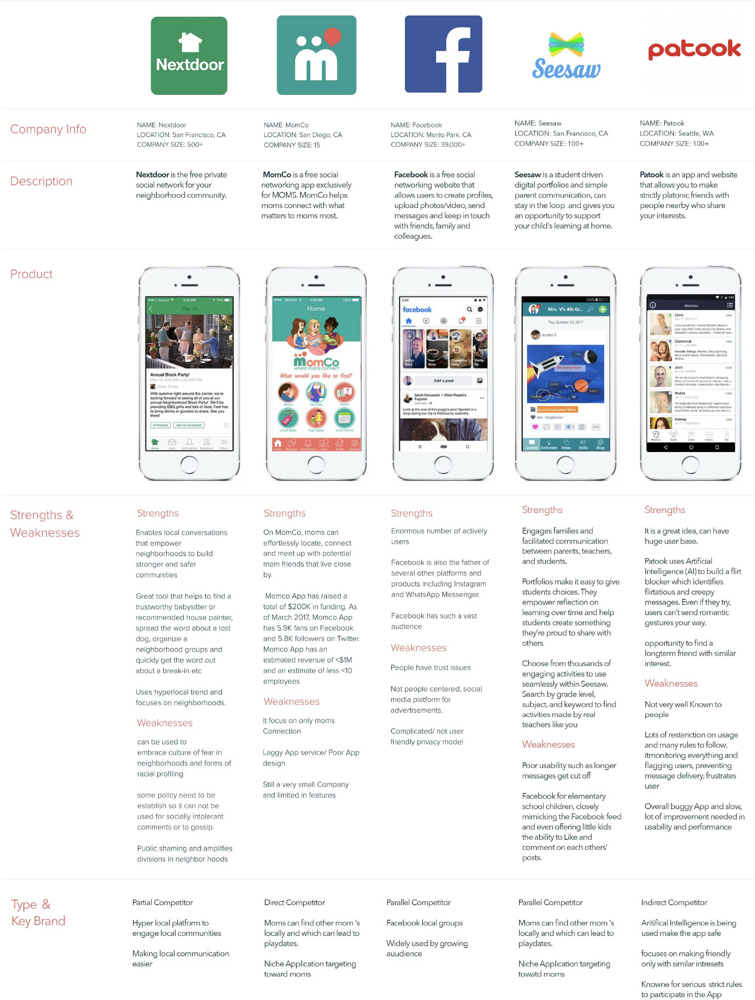
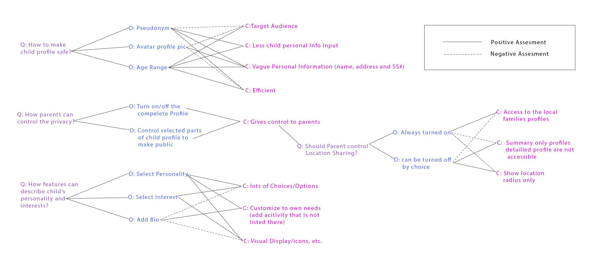

Ayani
Every Child Deserves a Friend!
Problem Statement
What if your child has special needs or has a unique personality? Friendships, both in the early grade school years, and later, when they’re teenagers, are crucial to a child’s social and emotional growth. More than half the children referred for emotional, behavioral problems have no friends or find difficulty interacting with peers. Parents can be very helpful in arranging playdates and help thier children initiate friendship by arranging a playdate. Unfortunately, there is no platform for parents to connect with other parents to find other children with similar interests and similar personalities locally. Not everyone has the opportunity to have a childhood friendship. E Parents usually use Facebook groups, next door hyperlocal groups, networking through schools and churches to find other parents whose kids could probably become friends with their children. They usually arrange playdates, and It is a lengthy process to get to know them and in the process getting to know parents have to go through a lot of awkward interactions. Every parent wants their child to have a meaningful friendship that can last forever. For instance, a child with a unique personality with love for chess, outer space, or Minecraft, would benefit from this app. Or maybe a child with special needs like autism or ADHD would benefit. You never know, if a child two blocks down has similar interests or personality as your child.
Goals
I want to create an app that app can help a parent to find other children with similar interests locally. It could be used by a parent, guardian, or teacher who knows a child who is having a tough time making friends. The app will display a child profile, gender, and any of his/her interests, etc. It will offer a parent-to-parent app service that will allow parents to arrange after school play dates for your child. The app can also allow parents to use it as a tool to schedule a playdate and even create after school kids clubs with similar interests under their supervision. Similar to Nextdoor App, I want to use a hyperlocal trend but focus it on children; however, including a strict privacy policy that parents are comfortable using. I believe that using this app can give a child a friend where they can be themselves without peer pressure.
Competitive Analysis
Sketching Scenerios
Personas
Questions — Options — Criteria
User Flow